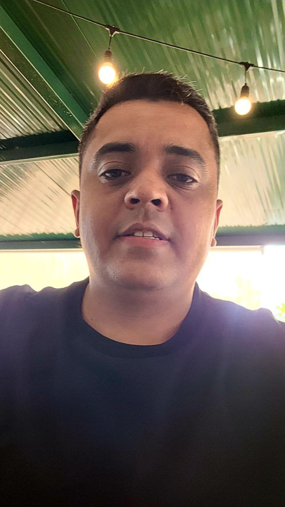

Sobre

Carlos Alessandro Leguiça de Sousa
Matricula: 202108797456
Tenho 29 anos, sou técnico de áudio, trabalho em uma igreja em Águas-Claras.
Sempre estive muito ligado a tecnologia e vi como uma grande oportunidade
encarar
esse desafio de cursar Analise e Desenvolvimento de Sistemas,
busco com essa graduação oportunidades em grandes empresas de tecnologia
assim podendo desenvolver em equipe, aplicações que permitam facilitar o dia-a-dia
de todos
nós que estamos ligados há tecnologia, e também as pessoas que não estão
diretamente ligadas há tecnologia, mas que acabam aproveitando de seus beneficios.
Desenvolvimento WEB em HTML5, CSS, JAVASCRIPT e PHP.
2° Semestre